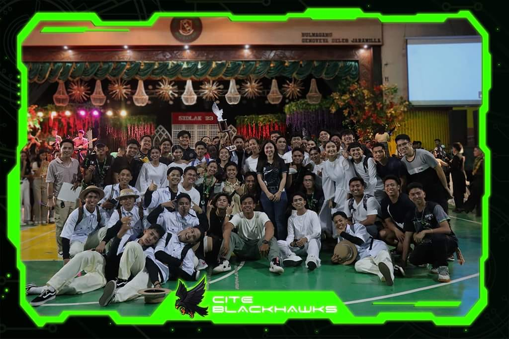

My BSIT journey began not with lines of code, but with a flickering cursor on a blank screen. Unsure of what awaited me, I dove headfirst into the realm of information technology, eager to unravel its mysteries. Initial hurdles, like deciphering binary code and wrestling with complex algorithms, threatened to deter me. However, surrounded by like-minded peers and guided by passionate professors, I persevered. Each conquered challenge instilled a sense of accomplishment, fueling my drive to learn more.
Now, semesters deep, my journey has transformed into a labyrinth of interconnected paths. Each course uncovers a new facet of the IT world, from the intricate architecture of networks to the creative power of web development. Project deadlines loom large, demanding meticulous planning and collaborative efforts. The pressure to excel can be daunting, but the thrill of overcoming obstacles and seeing projects come to life is immensely rewarding. This rollercoaster ride, filled with moments of frustration and bursts of exhilaration, has shaped me not just as a technophile, but also as a problem-solver, collaborator, and critical thinker. The future holds its own set of challenges, but with the foundation laid and the determination burning bright, I am confident that my BSIT journey will lead me to exciting destinations in the ever-evolving world of technology.
